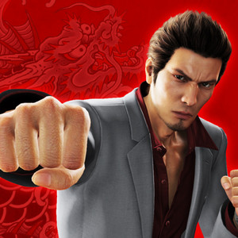
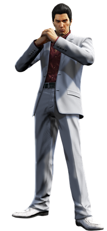
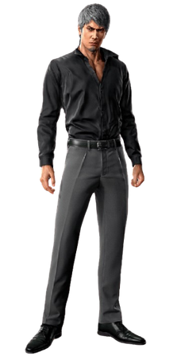
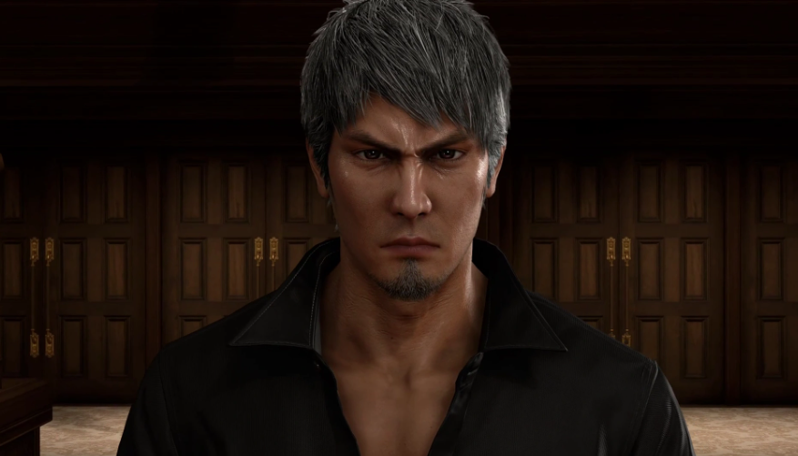
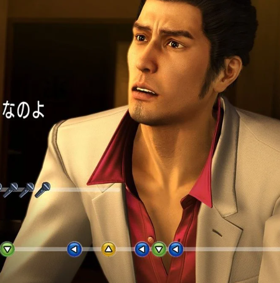

Kazuma Kiryu is the main protagonist of all six mainline Yakuza games, known as the "Dragon of Dojima".
Being adopted by Kazama, head of the Dojima family, Kiryu grows into being a member of the Tojo Clan Yakuza.
After being blamed for a murder, he gets expelled from the family and rebels against it to fight for justice for his mentor and friends.
Here is a picture of him:

A grid of pictures of Kiryu
 |
 |
 |
 |